Tags: 导入Edge::1-12
前向传播的每一层中，数据会进行那两种类型的变换，以及分别是什么意思？
- 线性变换（如加权求和、加上偏置等）
- 非线性变换（即激活函数，如 ReLU、Sigmoid 等）。
Tags: 导入Edge::1-12
随机 MASK 掉一部分输入，并根据上下文预测这些 MASK 的值，的确体现了 自编码器 的核心思想：是什么？
从损坏的数据中恢复原始信息。
Tags: 导入Edge::1-12
BERT 的 MASK 方式 和 自编码方式，他们的区别是什么？
MASK 机制 作为自编码的其中一种实现方式，但这并不意味着所有自编码模型都必须使用这种方式。
Tags: 导入Edge::1-12
是否所有自编码模型都需要通过 MASK 方式来实现？以及为什么？
不是，MASK 只是 BERT 特定的自编码实现策略。
Tags: 导入Edge::1-12
自编码模型（Autoencoder）是一种神经网络，如何描述？
用来把输入压缩到一个更小的表示，然后再尝试还原出原始数据。你可以把它看作是一种数据压缩工具，同时又能解压缩。
Tags: 导入Edge::1-12
GPT模型是否能够同时考虑到左侧和右侧的上下文，以及为什么？
不能，因为GPT是单向模型，只能利用单一方向（左到右或右到左）的上下文
Tags: 导入Edge::1-12
为了实现双向性，BERT 使用了什么预训练任务？
一种称为 掩码语言模型（Masked Language Model, MLM） 的预训练任务。
Tags: 导入Edge::1-12
为什么MLM任务决定了Bert模型的双向性？
会随机“掩盖”一些单词，然后用句子前后的内容去预测被掩盖的单词。
Tags: 导入Edge::1-12
Decoder-only 模型通过 什么 机制，只关注当前位置之前的 token，适合预测下一个单词。
Masked Self-Attention，掩码自注意力机制。
Tags: 导入Edge::1-12
Encoder-Decoder是大语言模型的主流架构吗？
不是的，Decoder-only是主流。
Tags: 导入Edge::1-12
Transformer 分为三个主要架构：分别是什么架构以及相应的例子。
- Encoder-only：如 BERT、RoBERTa。
- Decoder-only：如 GPT 系列、LLaMA。
- Encoder-Decoder：如 T5、BART。
Tags: 导入Edge::1-12
衡量语言模型好坏的重要指标是什么？
困惑度（Perplexity）。
Tags: 导入Edge::1-12
困惑度可以理解为语言模型对句子进行预测时候的什么性？它来源于信息论中的 什么 概念。
语言模型对某个句子或文本进行预测时的“平均不确定性”，
交叉熵（Cross-Entropy）。
Tags: 导入Edge::1-12
交叉熵的单位是什么？
比特（bits）。
Tags: 导入Edge::1-12
交叉熵的单位是“比特（bits）”，表示什么意思？【谁平均需要多少比特的信息来描述？】
每个单词平均需要多少比特的信息量来描述。
Tags: 导入Edge::1-12
每个单词的概率经过对数㏒变化以后求和求均值。
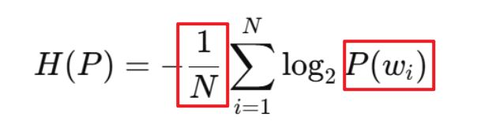
Tags: 导入Edge::1-12
交叉熵的定义公式是下面这个，两个方框里面的表示什么意思？
Tags: 导入Edge::1-12
困惑度的定义公式是什么？【谁为底的指数函数以及谁作为自变量。】
以2为底的指数函数，交叉熵作为自变量。
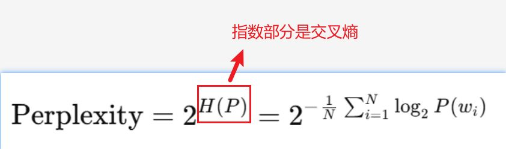
Tags: 导入Edge::1-12
困惑度衡量的是什么？【平均有多少种可能来预测什么？】
模型平均有多少种可能性来预测每个单词。
Tags: 导入Edge::1-12
困惑度是什么的指数，表示“模型对什么的预测的什么的数量”。
交叉熵的指数，每个单词预测的平均分支的数量。
Tags: 导入Edge::1-12
I love cats假设语言模型为以下每个单词分配了概率：
- P(’I’)=0.5
- P(’love’)=0.4
- P(’cats’)=0.1
计算交叉熵： 交叉熵公式是什么？
各个概率经过log对数变换以后求和求均值。
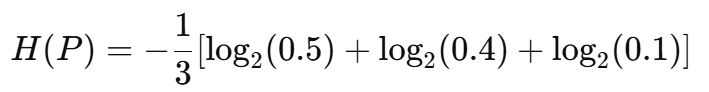
Tags: 导入Edge::1-12
I love cats假设语言模型为以下每个单词分配了概率：
- P(’I’)=0.5
- P(’love’)=0.4
- P(’cats’)=0.1
计算困惑度的过程是什么？
各个单词的概率经过log对数变换以后，求和求均值得到交叉熵。交叉熵经过以2为底的指数函数变化以后得到困惑度。
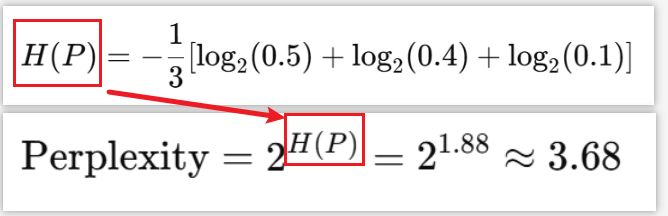
Tags: 导入Edge::1-12
困惑度是交叉熵的指数形式，用来直观表示模型的预测的什么数量。
预测单词的分支数量。
Tags: 导入Edge::1-12
困惑度越低，说明模型对文本的预测越准确还是不准确？
准确。
Tags: 导入Edge::1-12
定义了每个单词的概率分布。
Tags: 导入Edge::1-12
ROUGE 的输入是字符串，BLEU（如 sentence_bleu 函数）的输入是列表。
Tags: 导入Edge::1-12
ROUGE 的实现是什么？【对字符串进行哪两个操作？然后再计算什么率。】
先对字符串进行分词和 n-gram 拆分，
然后再计算 n-gram 的召回率。
Tags: 导入Edge::1-12
在 sentence_bleu 的计算中，参考文本和候选文本是以 什么 形式传递的。
分词后的列表。
Tags: 导入Edge::1-12
ROUGE：
主要用于什么任务？这个任务中，候选摘要和参考摘要通常是什么格式？
摘要生成或文本匹配任务。自然语言的完整句子（字符串）格式。
Tags: 导入Edge::1-12
BLEU
主要用于什么任务？这个任务中，候选摘要和参考摘要通常是什么格式？
主要用于机器翻译任务。候选文本和参考文本通常已经过分词处理，因此 BLEU 的设计直接以分词后的列表作为输入，方便快速计算。
Tags: 导入Edge::1-12
在机器翻译中，对于候选文本和参考文本 ，BLEU 的设计直接以什么格式作为输入，方便快速计算。
分词后的列表。
Tags: 导入Edge::1-12
在机器翻译中，对于候选文本和参考文本 ，ROUGE 的设计直接以什么格式作为输入，方便快速计算。
自然语言的完整句子（字符串）。
Tags: 导入Edge::1-12
ROUGE 使用字符串输入，
BLEU 使用列表输入。
Tags: 导入Edge::1-12
ROUGE 和 BLEU 分别的输入是什么类型？分别是用于什么任务？
Tags: 导入Edge::1-12
为什么 BLEU 被认为是基于精确率（Precision）?
他们两个的公式分别是什么？
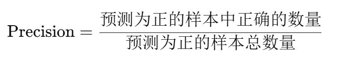
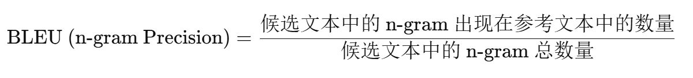
Tags: 导入Edge::1-12
BLEU 衡量的是候选文本的 生成质量，具体来说，是什么意思？【什么中的什么有多少是对的？】
"候选文本中的 n-gram 有多少是对的？"
是生成的 n-gram 中有多少出现在参考文本中。
Tags: 导入Edge::1-12
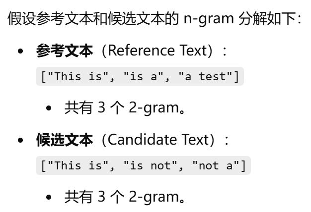
计算 BLEU 的 2-gram 精确率.
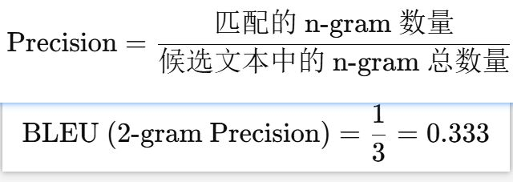
Tags: 导入Edge::1-12
BLEU 衡量的是 参考文本还是候选文本中有多少 n-gram 是正确的？
候选文本。
Tags: 导入Edge::1-12
BLEU 还引入了一个什么，用于处理候选文本长度过短的问题。
惩罚因子（Brevity Penalty，简称 BP）。
Tags: 导入Edge::1-12
BLEU 还引入了一个惩罚因子（Brevity Penalty，简称 BP），用途是惩罚什么？
用于处理候选文本长度过短的问题。
Tags: 导入Edge::1-12
BLEU 为什么需要惩罚因子？
如果仅仅计算精确率，候选文本长度越短，可能精确率越高。
Tags: 导入Edge::1-12
BLEU 引入惩罚因子 BP，惩罚哪些文本？
那些过短的候选文本。
Tags: 导入Edge::1-12
候选文本和参考文本在 BLEU 和 ROUGE 指标中的角色，谁相当于 标签 和 谁相当于 预测值 。
候选文本和参考文本 分别 可以类比为 预测值 和 标签。
Tags: 导入Edge::1-12
候选文本 的英文是什么？类比为 预测值 还是 标签？
Candidate Text，预测值。
Tags: 导入Edge::1-12
参考文本 的英文是什么？类比为 预测值 还是 标签？
Reference Text，标签。
Tags: 导入Edge::1-12
召回率（Recall）的通用公式是下面这个，ROUGE的计算公式是什么？
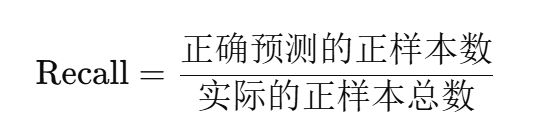
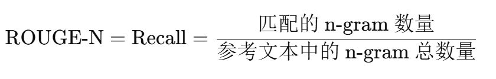
Tags: 导入Edge::1-12
BLEU 和 ROUGE 分别 注重的是 生成文本的什么率？
- BLEU 注重的是 生成文本的准确率（Precision）。
- ROUGE 注重的是 生成文本的召回率（Recall）。
Tags: 导入Edge::1-12
BLEU 注重的是 生成文本的准确率（Precision）：衡量的是什么？【哪里有多少比例的什么是匹配的？】
候选文本中有多少比例的n gram是匹配的。
候选文本中有多少内容出现在参考文本中。
Tags: 导入Edge::1-12
ROUGE 注重的是 生成文本的召回率（Recall）：衡量的是什么？
参考文本主要信息被覆盖的程度。
参考文本中的关键信息有多少被生成文本捕获。
Tags: 导入Edge::1-12
Process finished with exit code 0
里面exit code 0 表示什么意思？
程序运行成功，没有抛出未处理的错误或异常。意味着代码逻辑是正常的，所有操作都已完成。
Tags: 导入Edge::1-12
BLEU 对应的是什么率，什么文本？
精确率（Precision），即候选文本。
Tags: 导入Edge::1-12
ROUGE 对应的是什么率，基于什么文本？
召回率（Recall），即参考文本。
Tags: 导入Edge::1-12
ROUGE-N 实际上是将模型生成的结果和标准结果分词之后，按 什么 拆分后，计算什么率。
N-gram拆分，召回率。
Tags: 导入Edge::1-12
ROUGE-N 的计算公式是什么？
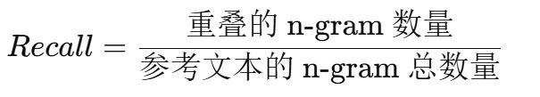
Tags: 导入Edge::1-12
为什么文本摘要任务中，使用召回率 ？
生成的摘要可能会比参考摘要更短，因此更关注是否能覆盖参考文本的关键信息，而不一定要求完全匹配。
Tags: 导入Edge::1-12
BLEU 指标的英文全称是什么？
Bilingual Evaluation Understudy。
Tags: 导入Edge::1-12
BLEU 指标如何从名字上看出它适合什么具体任务，以及更注重 什么率？
机器翻译任务，更注重 精确率。因为在翻译中，生成的文本需要尽可能与参考文本精准匹配。
Tags: 导入Edge::1-12
为什么机器翻译任务，更注重 精确率。
因为在翻译中，看中的是生成文本，也就是候选文本的质量。
生成的文本【候选文本】需要尽可能与参考文本精准匹配。
Tags: 导入Edge::1-12
ROUGE 指标英文全称是什么？
Recall-Oriented Understudy for Gisting Evaluation。
以召回为导向的替补
Tags: 导入Edge::1-12
ROUGE 指标如何从名字上看出它更注重 什么率？以及适合什么具体任务?
ROUGE 里面的RO代表的是Recall-Oriented，也就是更注重 召回率（Recall），更适合文本摘要任务，因为摘要更注重保留参考文本中的关键信息，而不需要完全精确匹配。
Tags: 导入Edge::1-12
为什么召回率（Recall），更适合文本摘要任务？
参考文本【原始文本】里面的信息需要尽可能被覆盖。
因为摘要更注重保留参考文本中的关键信息，而不需要完全精确匹配。
Tags: 导入Edge::1-12
评估 翻译质量 和 摘要质量，分别使用什么评估指标？
BLEU 更适合评估 翻译质量，ROUGE 更适合评估 摘要质量。
Tags: 导入Edge::1-12
ROUGE 更注重什么率，适合什么任务；BLEU 更注重什么率，适合什么任务。
Tags: 导入Edge::1-12
nltk 是 Python 中一个非常常用的自然语言处理（NLP）库，全称是什么？
Natural Language Toolkit。
Tags: 导入Edge::1-12
安装了torch-2.1.0+cu118-cp310-cp310-win_amd64.whl之后，如何测试PyTorch是否安装成功呢？【代码】
import torch
print(torch.__version__)
Tags: 导入Edge::1-12
安装了torch-2.1.0+cu118-cp310-cp310-win_amd64.whl之后，如何测试PyTorch 是否能够正确使用 CUDA？【代码】
import torch
print(torch.cuda.is_available())
Tags: 导入Edge::1-12
安装了torch-2.1.0+cu118-cp310-cp310-win_amd64.whl之后，如果 CUDA 可用，且你希望进一步验证 PyTorch 是否能够正确使用 GPU？【代码】
print(torch.cuda.get_device_name(0))
Tags: 导入Edge::1-12
print(torch.cuda.get_device_name(0))
这行代码的作用是什么？
验证当前的cuda能否使用GPU。
安装了torch-2.1.0+cu118-cp310-cp310-win_amd64.whl之后，如果 CUDA 可用，且你希望进一步验证 PyTorch 是否能够正确使用 GPU。
Tags: 导入Edge::1-12
安装PyTorch的时候，谁确定了他的版本，这个逻辑顺序是什么？
显卡版本决定了可以使用的 CUDA 版本，进而影响到你能安装的 PyTorch 版本。
Tags: 导入Edge::1-12
下面公式是包含了 softmax 和 交叉熵 的完整公式，其中，红框的是什么意思？
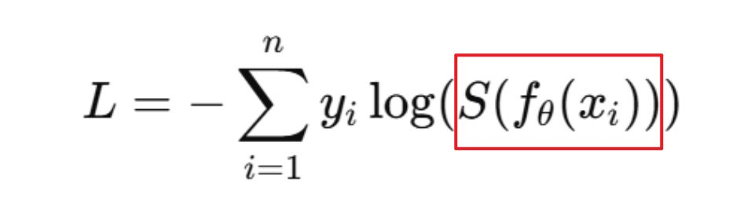
S(fθ(xi))：表示 softmax 函数将 logits 转换为概率分布。
Tags: 导入Edge::1-12
下面公式是包含了 softmax 和 交叉熵 的完整公式，其中，红框的是yi：真实标签，通常是 什么形式？
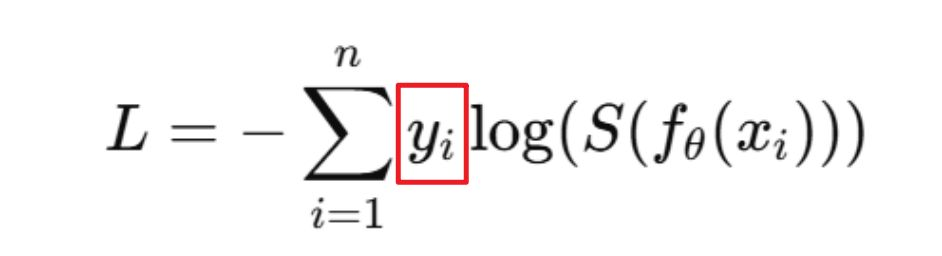
one-hot 编码（只有正确类别为 1，其他类别为 0）。
Tags: 导入Edge::1-12
下面公式是包含了 softmax 和 交叉熵 的完整公式，该公式的完整含义/过程是什么？
该公式的含义是对每个样本的真实标签的独热编码与模型预测的 softmax 概率值的对数 相乘，再求和，取负值。